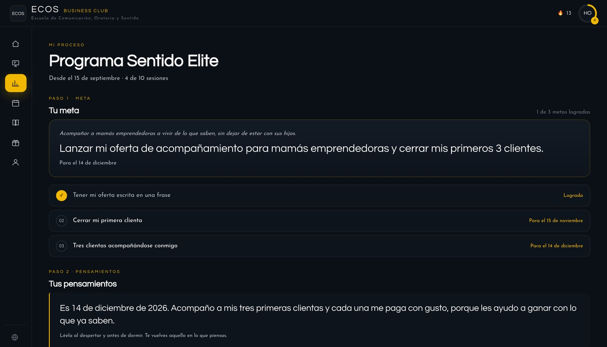

Laura · Sesión 1 · Así te ves hoy en diez áreas.
Laura · Sesión 1 vs. sesión 10
Laura · Programa Sentido
Quieres acompañar a mamás emprendedoras, pero sientes que todavía no es el momento.
El miedo no es al taller: es a mostrarte. Tu propósito ya está claro.
